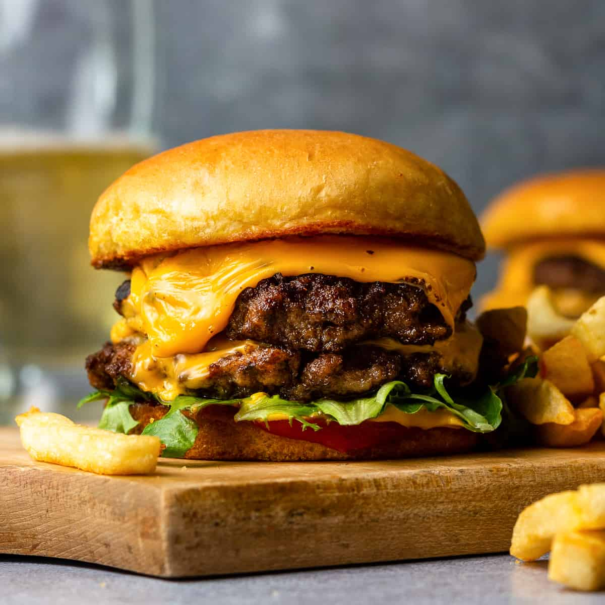

Smash Burger

Crispy edges and a juicy middle, these skillet patties really hit the spot and are easy to whip up. Housed between two potato buns that soak up the juice, this is the ultimate bite!
Ingredients
- 1 tablespoon canola oil
- 4 potato burger buns
- 2 tablespoons unsalted butter softened
- 1 pound ground beef blend
- Freshly ground black pepper
- 4 slices of American cheese
- Favorite toppings and condiments
Steps
- Brush a 12-inch cast iron or stainless steel skillet with oil and set it over medium heat for 3-4 minutes. While the skillet heats, form ¼ pound beef into very loose 2-inch thick patties. The meat should barely hold its shape. Generously season one side of the patty with salt & pepper.
1 pound ground beef blend of 1/3 ground chuck, Kosher salt, Freshly ground black pepper, 1 tablespoon canola oil
- Butter the inside on the buns and place (buttered-side down) on the hot skillet. Cook just until the buns are nicely toasted (watch closely). Set the buns aside.
2 tablespoons unsalted butter, 4 potato burger buns
- Increase the heat under the skillet to medium-high and heat the skillet an additional 1 minute.
- Set two patties, seasoned-side down, on opposite sides in the skillet and firmly press down on them until they are about 4-4½-inches wide and ½-inch thick. Season the top-side of the burgers with salt & pepper.
- Cook the patties, undisturbed, until the outer edges are dark caramel brown.
- Flip the burgers and cook 1 minute. Add cheese and cook until desired doneness, about 1 more minute for medium-well. (If you like a medium-rare burger, add the cheese right after flipping the burger and cook just 1 minute.)
4 slices American cheese
- Set the cooked burgers, cheese side up, on a paper towel-lined plate and repeat the cooking process with the remaining burger patties.
- Place the burgers on the buns and add your favorite condiments and toppings.
- Enjoy!